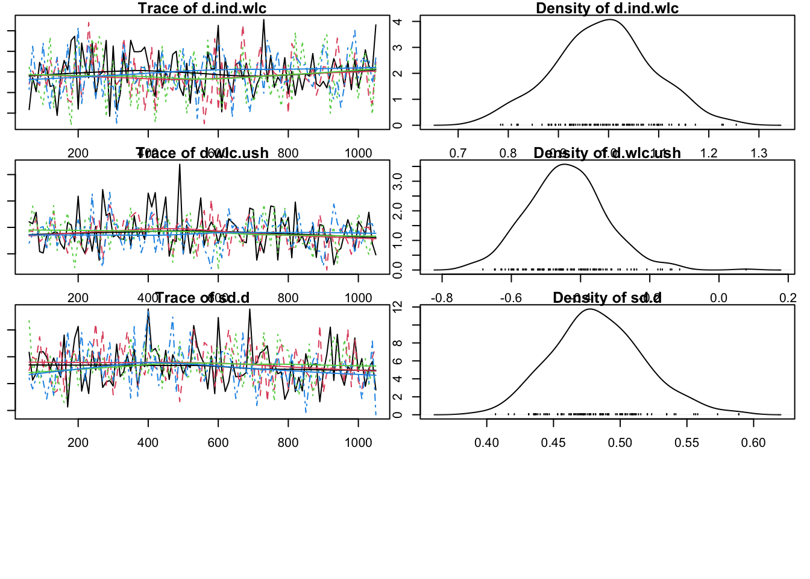

library(gemtc)Loading required package: codalibrary(rjags)Linked to JAGS 4.3.0Loaded modules: basemod,bugsNetwerkmeta-analyse is een nuttig hulpmiddel om de relatieve effectiviteit van verschillende behandelingen of interventies gezamenlijk in te schatten. Netwerk meta-analyse staat ook bekend als mixed-treatment comparison meta-analyse. Dit komt omdat het meerdere directe en indirecte behandelingsvergelijkingen integreert in één model, dat kan worden geformaliseerd als een “netwerk” van vergelijkingen. Netwerk meta-analyse is een “hot” onderzoeksonderwerp. In de afgelopen tien jaar is het steeds meer opgepikt door toegepaste onderzoekers in de biomedische sector en andere disciplines. Deze methode gaat echter ook gepaard met extra uitdagingen en valkuilen, vooral met betrekking tot heterogeniteit en zogenaamde netwerkinconsistentie.
Netwerk meta-analyse heeft enkele voordelen: - Het stelt ons in staat om alle beschikbare informatie van een reeks gerelateerde onderzoeken samen te voegen in één analyse. Bedenk hoe we in conventionele meta-analyses gewoonlijk omgaan met onderzoeken waarin verschillende behandelingen worden vergeleken met, laten we zeggen, een placebo. We zouden dan elke vergelijking moeten samenvoegen (bijv. behandeling A vergeleken met placebo, behandeling B vergeleken met placebo, behandeling A vergeleken met behandeling B, enz) in een aparte meta-analyse.
Netwerkmeta-analyse kan indirect bewijs in een netwerk opnemen, wat niet mogelijk is in conventionele meta-analyse. In paarsgewijze meta-analyses kunnen we alleen direct bewijs samenvoegen van vergelijkingen die daadwerkelijk in een trial waren opgenomen.
Als aan alle aannames is voldaan en als de resultaten voldoende overtuigend zijn, kunnen we uit netwerkmeta-analyses afleiden welk type behandeling de voorkeur verdient voor de onderzochte doelpopulatie.
Om de behandelingseffecten te schatten, combineert netwerk meta-analyse dus zowel direct (d.w.z. waargenomen) als indirect bewijs. Dit is echter gebaseerd op de aanname van transitiviteit. Er is sprake van transitiviteit als we direct bewijs van twee vergelijkingen kunnen combineren om daaruit geldig indirect bewijs af te leiden over een derde vergelijking (van bv vergelijkingen \(A-B\) en \(C-B\) om indirect bewijs te leveren over een gerelateerde vergelijking als bv \(A-C\)). De statistische manifestatie van transitiviteit is consistentie, het tegenovergestelde daarvan is inconsistentie. Van consistentie is sprake wanneer het werkelijke effect van een vergelijking op basis van direct bewijs overeenkomt met het effect op basis van indirect bewijs, inconsistentie ontstaat wanneer dat niet het geval is.
Er zijn verschillende netwerk meta-analyse modellen beschikbaar. Sommige methoden, zoals nodesplitting of net heat plots, kunnen worden gebruikt om inconsistenties in ons netwerk te identificeren. Als er inconsistenties worden gevonden, bedreigt dit de geldigheid van onze resultaten als geheel. In dergelijke gevallen moet het hele netwerk worden gecontroleerd op kenmerken die systematische verschillen tussen studies/ontwerpen kunnen hebben veroorzaakt. Netwerk meta-analyse kan met een frequentistische of een Bayesiaanse aanpak worden uitgevoerd. In de praktijk heeft elk van deze methoden zijn eigen sterke punten, maar de algemene resultaten lijken meestal erg op elkaar.
In netwerkmeta-analyses op basis van een Bayesiaans hiërarchisch model kunnen we ook studiecovariaten toevoegen die verschillen in effectgrootte voorspellen. Dit resulteert in een netwerk meta-regressiemodel.
Indices zoals de SUCRA of P-score kunnen worden gebruikt om te onderzoeken welk type behandeling het meest effectief is in ons netwerk. Het is echter ook belangrijk om onzekerheid te integreren in ons besluitvormingsproces.
Waarschijnlijkheidsintervallen van verschillende behandelingen overlappen elkaar vaak, waardoor het minder duidelijk is of één vorm echt superieur is aan alle andere.
Het {gemtc} pakket is afhankelijk van {rjags}, dat kan worden gebruikt voor de Gibbs sampling procedure. Daarvoor moet je wel JAGS hebben geinstalleerd op je computer. Daarna kun je {rjags} binnenhalen.
library(gemtc)Loading required package: codalibrary(rjags)Linked to JAGS 4.3.0Loaded modules: basemod,bugsDe TherapyFormatsGeMTC dataset is eigenlijk een list met twee elementen, waarvan er één data heet. Dit element is het dataframe dat we nodig hebben om het model te draaien. Laten we er eens naar kijken.
library(dmetar)Extensive documentation for the dmetar package can be found at:
www.bookdown.org/MathiasHarrer/Doing_Meta_Analysis_in_R/
Attaching package: 'dmetar'The following object is masked from 'package:gemtc':
sucradata(TherapyFormatsGeMTC)
head(TherapyFormatsGeMTC$data) study diff std.err treatment
1 Ausbun, 1997 0.092 0.195 ind
2 Ausbun, 1997 NA NA grp
3 Crable, 1986 -0.675 0.350 ind
4 Crable, 1986 NA NA grp
5 Thiede, 2011 -0.107 0.198 ind
6 Thiede, 2011 NA NA grpNu we de data hebben, zetten we de mtc.network functie aan. Het optionele treatments argument kan gebruikt worden om {gemtc} te voorzien van de werkelijke namen van alle behandelingen die in het netwerk zijn opgenomen. Deze informatie moet worden klaargezet in een dataframe met een id- en een description-kolom. We hebben zo’n dataframe gemaakt en opgeslagen als treat.codes in TherapyFormatsGeMTC:
TherapyFormatsGeMTC$treat.codes id description
1 ind Individual
2 grp Group
3 gsh Guided Self-Help
4 tel Telephone
5 wlc Waitlist
6 cau Care As Usual
7 ush Unguided Self-HelpWe gebruiken dit dataframe en onze effectsize-gegevens in TherapyFormatsGeMTC om ons mtc.network-object te maken. We slaan het op onder de naam network.
network <- mtc.network(data.re = TherapyFormatsGeMTC$data,
treatments = TherapyFormatsGeMTC$treat.codes)Door het resulterende object in de summary-functie te stoppen, krijgen we al wat interessante informatie over ons netwerk.
summary(network)$Description
[1] "MTC dataset: Network"
$`Studies per treatment`
ind grp gsh tel wlc cau ush
62 52 57 11 83 74 26
$`Number of n-arm studies`
2-arm 3-arm
181 1
$`Studies per treatment comparison`
t1 t2 nr
1 ind tel 4
2 ind wlc 18
3 grp ind 7
4 grp gsh 5
5 grp wlc 18
6 grp ush 1
7 gsh ind 4
8 gsh wlc 36
9 gsh ush 5
10 tel wlc 1
11 cau ind 30
12 cau grp 21
13 cau gsh 8
14 cau tel 6
15 cau ush 9
16 ush wlc 11We kunnen nu ook de plot-functie gebruiken om een netwerkplot te genereren. De dikte van de randen komt overeen met het aantal studies dat we hebben opgenomen voor die vergelijking.
plot(network,
use.description = TRUE) # Use full treatment namesMet het {igraph} pakket kunnen we de netwerkplot ook aanpassen. Kijk voor meer informatie over de mogelijke aanpassingen naar de documentatie van igraph.
library(igraph)
Attaching package: 'igraph'The following objects are masked from 'package:stats':
decompose, spectrumThe following object is masked from 'package:base':
unionset.seed(12345) # set seed for reproducibility
plot(network,
use.description = TRUE, # Use full treatment names
vertex.color = "white", # node color
vertex.label.color = "gray10", # treatment label color
vertex.shape = "sphere", # shape of the node
vertex.label.family = "Helvetica", # label font
vertex.size = 20, # size of the node
vertex.label.dist = 2, # distance label-node center
vertex.label.cex = 1.5, # node label size
edge.curved = 0.2, # edge curvature
layout = layout.fruchterman.reingold)Nu we ons netwerk hebben, kunnen we een model samenstellen. We gebruiken de mtc.model-functie om een model te maken. We geven ons netwerk, de likelihood, link, linearModel en het aantal chains mee.
# We give our compiled model the name `model`.
model <- mtc.model(network,
likelihood = "normal",
link = "identity",
linearModel = "random",
n.chain = 4)Modellen kunnen we op verschillende manieren specificeren. Laten we twee modellen definieren.
mcmc1 <- mtc.run(model, n.adapt = 50, n.iter = 1000, thin = 10)Compiling model graph
Resolving undeclared variables
Allocating nodes
Graph information:
Observed stochastic nodes: 182
Unobserved stochastic nodes: 190
Total graph size: 2606
Initializing modelWarning in rjags::jags.model(file.model, data = syntax[["data"]], inits =
syntax[["inits"]], : Adaptation incompleteNOTE: Stopping adaptationmcmc2 <- mtc.run(model, n.adapt = 5000, n.iter = 1e5, thin = 10)Compiling model graph
Resolving undeclared variables
Allocating nodes
Graph information:
Observed stochastic nodes: 182
Unobserved stochastic nodes: 190
Total graph size: 2606
Initializing modelOm te zien of de modellen zijn geconvergeerd, plotten we ze. Op basis van trace en met name densityplots zie je dat het tweede model er betrouwbaarder uitziet.
par(mar = c(1, 1, 1, 1))
plot(mcmc1)
plot(mcmc2)Voor diagnostiek kun je ook nog Gelman-plots draaien. Waarden moeten dicht bij 1 liggen. Dat is bij beiden het geval ook al toont het tweede model een betere convergentie.
par(mar = c(1, 1, 1, 1))
gelman.plot(mcmc1)
gelman.plot(mcmc2)De waarde kun je ook direct opvragen.
gelman.diag(mcmc1)$mpsrf[1] 1.035278gelman.diag(mcmc2)$mpsrf[1] 1.000577Een groot voordeel van het {gemtc} pakket is dat je er een netwerk meta-regressie mee kan uitvoeren. Stel dat we willen evalueren of het risico op bias van een studie invloed heeft op de effecten in onze netwerkmeta-analyse. Het zou bijvoorbeeld kunnen dat studies met een hoog biasrisico over het algemeen hogere effecten rapporteren in vergelijking met de controlegroep of alternatieve behandelingen. Door het biasrisico als voorspeller op te nemen in ons model, kunnen we controleren op een dergelijke associatie en de invloed ervan op onze resultaten beoordelen.
TherapyFormatsGeMTC$study.info study rob
1 Campbell, 2000 1
2 Reynolds, 1989 1
3 Carpenter, 1994 0
4 Shrednik, 2000 1
5 Lesley, 1999 1
6 Wyatt, 2003 0
7 Lemon, 2005 1
8 James, 2012 0
9 Graesch, 2000 0
10 Lange, 1993 1
11 Marinkovich, 2003 1
12 Wuertz, 2016 1
13 Hughey, 2012 1
14 Dobbs, 2000 1
15 Quick, 2006 1
16 Harbert, 1999 1
17 Nelson, 1987 1
18 Watkins Jr, 2004 1
19 Ristau, 1992 1
20 Schlegel, 1989 1
21 Wierenga, 2004 1
22 Laird, 2008 1
23 Riley, 2002 1
24 Germuska, 1996 0
25 Schulker, 2009 1
26 Barrett, 2005 1
27 Neil, 2015 1
28 Congour, 1996 1
29 Hurla, 1985 1
30 Hanrahan, 1999 1
31 Koslosky, 1991 1
32 Runnels, 2004 1
33 Orman, 2012 0
34 Dewitt, 1995 1
35 Fair, 2003 0
36 Schlaver, 2004 1
37 King, 1990 1
38 Snider, 1998 1
39 Craft, 2014 1
40 Ceurvorst, 2011 1
41 Roberts, 1996 1
42 Carrell, 2008 0
43 Muhlenbruck, 1998 1
44 Kramer, 2007 1
45 Barker, 1997 0
46 Johnson, 1989 1
47 Shorb, 1998 0
48 Scholer, 2017 1
49 Maurath, 1994 0
50 Leach, 2014 1
51 Roberts, 1997 1
52 De Venecia, 2011 1
53 Shea, 2011 1
54 Gilleland, 1989 1
55 Murray, 1996 1
56 Menzies, 2003 0
57 Chambers, 2010 1
58 Mickey, 1989 1
59 Hiatt, 1985 1
60 Breiman, 2001 1
61 Parker, 2002 1
62 Erickson, 1998 1
63 Ancmon, 2001 0
64 Fladland, 1997 1
65 Crane, 1984 1
66 Christenson, 2018 1
67 Plewe, 1991 1
68 Fergerson, 2014 1
69 Frenzel, 2006 0
70 Walker, 1990 1
71 Crable, 1986 1
72 Gilly, 2014 1
73 Austin, 1988 1
74 Whitaker, 2017 1
75 Breiman, 2001 1
76 Brown, 1985 1
77 Dahl, 2002 0
78 Clear, 1989 1
79 Oberholser, 2008 1
80 Debenedictis, 1993 0
81 Martin, 2017 1
82 Hassan, 2011 1
83 Knickerbocker, 1987 1
84 Cook, 2013 0
85 Ciccone, 1997 0
86 Summerhays, 1987 0
87 Silva, 1986 1
88 Thompson, 2003 0
89 Pauly, 2003 0
90 Schwartz, 2012 0
91 Englund, 2017 0
92 Horton, 1985 0
93 Scott, 1993 0
94 Staley, 1992 1
95 Allen, 2003 0
96 Vahlenkamp, 2006 1
97 Blevins, 2003 0
98 Huebner, 1997 0
99 Mcmanus, 1987 0
100 Fotenos, 1994 0
101 Delaney, 1995 0
102 Fay, 2002 0
103 Mai, 2003 0
104 Nelson, 2006 0
105 Reeve, 2013 0
106 Eisenberg, 1995 0
107 Woodard, 2013 0
108 Roberts, 2017 0
109 Jeffers, 1996 0
110 Rusciolelli, 2000 0
111 Miller, 1989 0
112 Ayers, 2008 0
113 Wagner, 1994 0
114 Nguyen, 1996 1
115 Weimer, 1999 0
116 Isles, 2003 0
117 Ralph, 1989 0
118 Brown, 2017 0
119 Burges, 1993 0
120 Williams, 1989 0
121 Pylkka, 2008 0
122 Kilgore, 2003 1
123 Tenbarge, 2000 1
124 Carvey, 2008 0
125 Mcmahon, 1998 0
126 Metzger, 1988 0
127 Warwick, 1986 0
128 Lopez, 2011 0
129 Burgan, 2012 0
130 Gruber, 2013 0
131 Meraz, 2014 0
132 Ono, 1985 0
133 Gleave, 2004 0
134 Whiting, 1990 0
135 Ebberts, 1992 0
136 Thompson, 1998 0
137 Jones, 2013 0
138 Kurth, 1992 0
139 Maranto, 1997 0
140 Sheppard, 1994 0
141 Belk, 1986 0
142 Harder, 2005 0
143 Hopkins, 2003 0
144 Gilstrap, 2015 1
145 Quinonez Dominguez, 1993 1
146 Hetherington, 2003 0
147 Bengston, 2004 0
148 Joy, 2002 0
149 Robinson, 2015 0
150 Amsberry, 2010 0
151 Thiede, 2011 1
152 Bonertz, 2015 1
153 Sheehan, 2013 0
154 White, 2006 0
155 Lucero, 2001 1
156 Edwards, 2010 0
157 Godinez, 2005 0
158 Hall, 1997 0
159 Underwood, 2008 0
160 Ledbetter, 1984 0
161 Hayko, 1999 0
162 Chamberlain, 2011 0
163 Fourroux, 1999 0
164 Leonard, 2010 0
165 Narum, 1986 1
166 Villalobos-Valles, 2006 0
167 Duba, 1990 0
168 Ausbun, 1997 0
169 Durgan, 1998 0
170 Aaron, 2004 0
171 Heath, 1998 0
172 Vaclav, 1984 0
173 Rodgers, 1993 0
174 Watson, 1997 0
175 Tamburri, 2001 0
176 Homrighausen, 2002 0
177 Buchholtz, 2010 0
178 Cowan, 2010 1
179 Bond, 1988 0
180 Edgar, 2015 0
181 Sherratt, 2000 0
182 Santistevan-Gettel, 2012 0
183 Graham, 1986 0De dataset bevat twee kolommen: study, de naam van de studie die is opgenomen in ons netwerk en rob, het biasrisico (o voor laag en 1 voor hoog biasrisico).
Met dataframe study.info kunnen we nu een meta-regressienetwerk maken met mtc.network.
network.mr <- mtc.network(data.re = TherapyFormatsGeMTC$data,
studies = TherapyFormatsGeMTC$study.info,
treatments = TherapyFormatsGeMTC$treat.codes)Nu moeten we de regressor definiëren die we willen opnemen in ons netwerkmeta-analysemodel. Dit kan worden gedaan door een listobject met drie elementen te genereren:
coëfficiënt: We stellen dit element in op “gedeeld” omdat we één gedeelde coëfficiënt willen schatten voor het effect van (hoog) biasrisico over alle behandelingen die zijn opgenomen in onze netwerkmeta-analyse.
variabele: Dit specificeert de naam van de variabele die we willen gebruiken als predictor (hier: rob).
controle: We moeten ook de behandeling specificeren die we als referentiegroep willen gebruiken. In ons voorbeeld gebruiken we cau (care as usual).
regressor <- list(coefficient = "shared",
variable = "rob",
control = "cau")Nu moeten we het model definiëren. We voorzien de functie mtc.model van het netwerk dat we zojuist hebben gegenereerd, stellen het type van ons model in op regression en voorzien de functie van het regressorobject dat we zojuist hebben gegenereerd. We slaan de uitvoer op onder de naam model.mr.
model.mr <- mtc.model(network.mr,
likelihood = "normal",
link = "identity",
type = "regression",
regressor = regressor)Na deze stap kunnen we het model uitvoeren met de functie mtc.run. We gebruiken dezelfde specificaties als we eerder hebben gebruikt voor het passen van het mcmc2-model. De resultaten worden opgeslagen als mcmc3.
mcmc3 <- mtc.run(model.mr,
n.adapt = 5000,
n.iter = 1e5,
thin = 10)Compiling model graph
Resolving undeclared variables
Allocating nodes
Graph information:
Observed stochastic nodes: 182
Unobserved stochastic nodes: 191
Total graph size: 2980
Initializing modelNu kunnen we het analyseren met de summary-functie.
summary(mcmc3)
Results on the Mean Difference scale
Iterations = 5010:105000
Thinning interval = 10
Number of chains = 4
Sample size per chain = 10000
1. Empirical mean and standard deviation for each variable,
plus standard error of the mean:
Mean SD Naive SE Time-series SE
d.ind.cau 0.69902 0.07980 0.0003990 0.0004198
d.ind.grp 0.19288 0.10044 0.0005022 0.0005439
d.ind.gsh 0.16121 0.10467 0.0005233 0.0005576
d.ind.tel 0.02273 0.16239 0.0008119 0.0008164
d.ind.wlc 0.95051 0.09206 0.0004603 0.0004994
d.wlc.ush -0.45545 0.11540 0.0005770 0.0005744
sd.d 0.47060 0.03403 0.0001701 0.0001711
B -0.33205 0.13003 0.0006502 0.0010424
2. Quantiles for each variable:
2.5% 25% 50% 75% 97.5%
d.ind.cau 0.542709 0.64513 0.69872 0.7525 0.8559
d.ind.grp -0.004622 0.12585 0.19281 0.2599 0.3901
d.ind.gsh -0.043723 0.09062 0.16180 0.2320 0.3650
d.ind.tel -0.299458 -0.08486 0.02381 0.1314 0.3407
d.ind.wlc 0.770141 0.88924 0.95011 1.0118 1.1333
d.wlc.ush -0.680003 -0.53358 -0.45566 -0.3774 -0.2287
sd.d 0.407829 0.44685 0.46930 0.4930 0.5408
B -0.586304 -0.41980 -0.33141 -0.2448 -0.0775
-- Model fit (residual deviance):
Dbar pD DIC
185.73014 74.50512 260.23526
183 data points, ratio 1.015, I^2 = 2%
-- Regression settings:
Regression on "rob", shared coefficients, "cau" as control
Input standardized: x' = (rob - 0.4340659) / 1
Estimates at the centering value: rob = 0.4340659De resultaten voor onze predictor worden gerapporteerd naast \(B\). Omdat onze voorspeller een dummycode heeft, vertegenwoordigt de waarde van \(B\) het effect van een onderzoek met een hoog biasrisico. De schatting is \(b= -0,33\), en als we kijken naar de tweede tabel (Kwantielen voor elke variabele), zien we dat het 95% geloofwaardigheidsinterval van \(b\) varieert van -0,59 tot -0,08. Omdat het interval geen nul bevat, kunnen we concluderen dat het biasrisico inderdaad van invloed is op de resultaten. Als het biasrisico hoog is (rob = 1), kunnen we hier hogere totale effecten voorspellen (omdat negatieve effectgroottes in ons voorbeeld wijzen op “betere” uitkomsten).
We kunnen de resultaten verder onderzoeken door het maken van twee forestplot: een met lage bias en een met hoge bias. We gebruiken de functie relative.effect en specificeren covariate waarde 0 en 1.
forest(relative.effect(mcmc3, t1 = "cau", covariate = 1),
use.description = TRUE, xlim = c(-1.5, 1))
title("Hoge Risicobias")forest(relative.effect(mcmc3, t1 = "cau", covariate = 0),
use.description = TRUE, xlim = c(-1.5, 1))
title("Lage Risicobias")Als we de forest plots vergelijken, zien we dat er een patroon is. De behandelingseffecten op basis van studies met een hoog biasrisico zijn over het algemeen hoger (d.w.z. negatiever). Dit komt overeen met de schatting van onze predictor \(b\) in het gepaste model.
Tot slot kunnen we ook onderzoeken of het netwerkmeta-regressiemodel dat we net hebben gegenereerd beter past bij de gegevens dan het “normale” netwerkmeta-analysemodel van eerder. Om dit te doen, kunnen we de deviance-informatiecriteria (DIC’s) vergelijken, die een equivalent zijn van de AIC- en BIC-waarden in frequentistische statistieken. We kunnen de DIC van zowel mcmc3:
summary(mcmc3)$DIC Dbar pD DIC data points
185.73014 74.50512 260.23526 183.00000 als mcmc2 opvragen met deze code:
summary(mcmc2)$DIC Dbar pD DIC data points
185.2144 137.8202 323.0345 183.0000 We zien in de uitvoer dat de DIC-waarde van ons meta-regressiemodel (\(DIC = 261,19\)) lager is dan die van ons vorige model waarin niet werd gecontroleerd voor risico van vertekening (\(DIC = 323,6\)). Lagere DIC-waarden duiden op een betere pasvorm. Op basis van deze bevinding kunnen we concluderen dat ons netwerk meta-regressiemodel beter past bij de gegevens dan een model zonder covariaat.